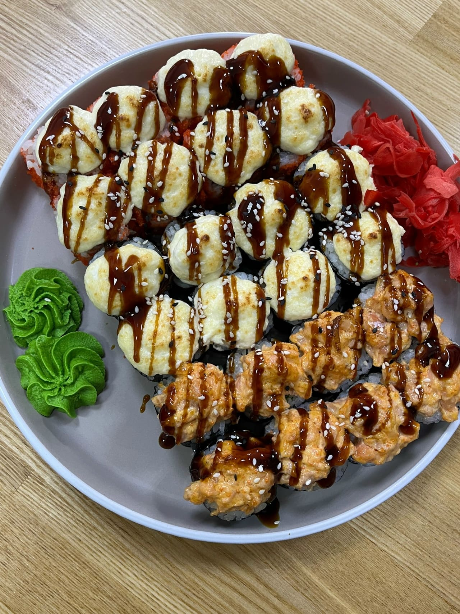
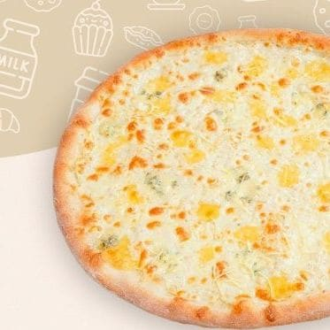

Роллы и пицца — две главные категории. Заказ по телефону, доставка по городу и самовывоз.

Холодные, темпура и запечённые · 25 позиций
Филадельфия люкс
640 ₽
Форель, нори, творожный сыр, рис · 230 г
Филадельфия с угрём
590 ₽
Угорь горячего копчения, сливочный сыр, огурец, нори · 220 г
Филадельфия лайт
530 ₽
Творожный сыр, огурец, нори, форель · 210 г
Филадельфия угорь лайт
520 ₽
Угорь, творожный сыр, массаго оранж, огурец, нори · 210 г
Дабл ролл
550 ₽
Форель, угорь, творожный сыр, нори, рис · 210 г
Тори
330 ₽
Курица копчёная, томат, огурец, укроп, творожный сыр, нори, рис · 220 г
Острая креветка
450 ₽
Креветка, огурец, спайси, лист салата, нори · 200 г
Креветка темпура
470 ₽
Креветка темпура, огурец, нори, кунжут, творожный сыр · 200 г
Калифорния классик
390 ₽
Краб, огурец, авокадо, майонез, нори, массаго оранж, рис · 200 г
Калифорния с креветкой
520 ₽
Креветка, огурец, авокадо, майонез, нори, массаго оранж, рис · 210 г
Калифорния с форелью
520 ₽
Форель, огурец, авокадо, майонез, нори, массаго оранж, рис · 210 г
С креветкой темпура
450 ₽
Рис, креветка, огурец, массаго · 200 г
Калифорния хот с крабом темпура
370 ₽
Краб, огурец, массаго, майонез, нори · 200 г
Калифорния хот с креветкой темпура
470 ₽
Креветка, огурец, массаго, майонез, нори · 200 г
Калифорния хот с форелью темпура
490 ₽
Форель, огурец, массаго, майонез, нори · 200 г
Темпурная курочка
360 ₽
Курица копчёная, нори, томат, творожный сыр, рис · 200 г
Эби темпура
420 ₽
Креветка, бекон, нори, творожный сыр · 200 г
Асахи
550 ₽
Форель, кларий, огурец, рис, творожный сыр · 240 г
Банког
420 ₽
Сыр фета, курица копчёная, спайси, томат, нори, рис · 235 г
Бостон
410 ₽
Курица копчёная, огурец, нори, чёрно-белый кунжут · 240 г
Пекин
490 ₽
Угорь кларий, творожный сыр, огурец, рис, нори, чёрный кунжут · 240 г
Мистик
520 ₽
Форель, спайси, лист салата, творожный сыр, нори, рис · 270 г
Запечённый краб
350 ₽
Крабовое мясо, нори, массаго, майонез, рис · 190 г
Хори
360 ₽
Крабовое мясо, авокадо, творожный сыр, нори · 190 г
Сёгун
480 ₽
Креветка, кларий, творожный сыр, нори, рис · 190 г

29–30 см, на тонком тесте · 7 позиций
Пицца «4 сыра»
590 ₽
Фирменный красный соус, сыр моцарелла, сыр чеддер, сыр с голубой плесенью, сыр пармезан · 500 г, 29–30 см
Пицца «Пепперони»
470 ₽
Фирменный красный соус, сыр моцарелла, колбаски пепперони · 500 г, 29–30 см
Пицца «Карбонара»
490 ₽
Фирменный красный соус, сыр моцарелла, сырокопчёный бекон, красный лук, сыр пармезан · 500 г, 29–30 см
Пицца «Итальянская»
490 ₽
Фирменный красный соус, сыр моцарелла, колбаски пепперони, шампиньоны, маслины, итальянские травы · 500 г, 29–30 см
Пицца «Гавайская»
550 ₽
Белый соус, сыр моцарелла, копчёная куриная грудка, ананасы, сыр пармезан, сырный соус · 500 г, 29–30 см
Пицца «Чикен-фреш»
550 ₽
Фирменный красный соус, сыр моцарелла, копчёная куриная грудка, дольки томата, сырный соус · 500 г, 29–30 см
Пицца «Коррида»
590 ₽
Фирменный красный соус, сыр моцарелла, колбаски пепперони, охотничьи колбаски, перец халапеньо · 500 г, 29–30 см
Заказ принимаем по телефону — так быстрее и точнее любой формы.